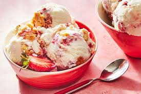
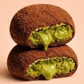
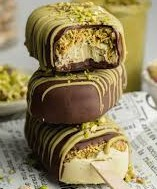

At Frost & Swirl, dessert becomes a full sensory experience that blends flavor, creativity, and visual charm. This trending ice cream destination has gained massive attention online for its vibrant colors, imaginative combinations, and beautifully styled treats that instantly capture attention on social media feeds.
The moment guests walk in, they are greeted by a lively and playful atmosphere filled with pastel tones, glowing neon signs, and cozy corners designed for photos. The interior is carefully designed to feel bright, cheerful, and camera ready, making every visit feel special. From the stylish serving cups to the artistic presentation of each dessert, every detail adds to the experience.
The menu showcases smooth soft serve in a variety of exciting flavors. Alongside timeless favorites like creamy vanilla and rich chocolate, guests can explore unique options such as strawberry shortcake swirl, tropical mango twist, cookies and cream dream, and seasonal surprise blends. Each serving can be customized with a wide selection of colorful toppings including crushed biscuits, rainbow sprinkles, caramel drizzle, chocolate chips, fresh fruit, and shimmering edible accents. Every order becomes a personalized creation that looks as delightful as it tastes.
A standout feature of Frost & Swirl is its rotating monthly flavor release. These limited time offerings keep the menu fresh and exciting, encouraging customers to return and try something new. The anticipation surrounding each new flavor has helped build a strong and loyal following.
In addition to soft serve, the shop offers thick milkshakes, layered parfait cups, warm waffle cone sundaes, and made to order ice cream sandwiches. Each item is carefully assembled with attention to texture, color balance, and presentation, ensuring that every dessert feels thoughtfully crafted.
Whether guests are visiting for a sweet treat with friends, celebrating a special moment, or simply capturing the perfect photo, Frost & Swirl delivers a joyful and flavorful experience that keeps people talking long after the last spoonful.
Frost & Swirl — Where every scoop is made to shine.

A luxurious twist on a beloved treat, Dubai Chocolate Mochi blends elegance with indulgence. This soft and chewy mochi is filled with rich, velvety chocolate infused with hints of roasted pistachio and smooth hazelnut cream. Each piece is lightly dusted and finished with a delicate chocolate drizzle and crushed nut topping for added texture. The combination of silky filling and tender mochi creates a perfectly balanced bite that feels both decadent and refined. Beautifully presented and irresistibly smooth, it has quickly become one of the most talked about items on the menu.

Inspired by the rich flavors of Middle Eastern desserts, Pistachio Kunafa Ice Cream is a luxurious fusion of creamy and crunchy textures. This creation features smooth pistachio ice cream layered with golden, crispy kunafa strands and a drizzle of sweet syrup for the perfect touch of indulgence. Each scoop is topped with crushed roasted pistachios and a light swirl of cream, creating a beautiful contrast of nutty flavor and delicate sweetness. The combination of cold, velvety ice cream and crisp pastry makes every bite uniquely satisfying and unforgettable.